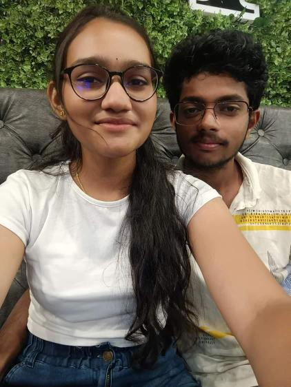

Happiest birthday to my chaatoo!
What do I say..... Unna pathi na yosichalye.....yosichiteh matum than irrukan! 🫠..... Who are you niranjana?
Who is niranjana, intha website kulla unna thavira vera yaaruvanthalum therinchikatum 🙃..... Niranjana.....the only word that sounds like 'mine' to my ears......I saw her when I was 13 years old, a small boy with not even one hair to call a moustache 🧒🏻.....Avan, athavuthu Surya Sundara Raman (too big 🙄) annaiku enna pathanu thrl, avanuku ivala pudichiduchi! Avanuku love nah Ennanu theriyathu, avanuku ethuvumye theriyathu 🙄....scene than poduvan, appadi scene pottu ivala crt pannanum nuh nenaichan....mudiyala 🥲
Aprom....itheh paiyan....oru moonu varusham intha ponnu illama, romba nallah jolly ah, best version of him ah irrunthan, school topper ah irrunthan, neraiya ponnungala vachi avana kalaipanga ana perusa eduthukave matan 🙂‍↔️..... Appadi pattah paiyan, oru chinna thapuh panniduran, Avan vizhuran....ellam pakuranga....apponu pathu antha ponnum thirumbi varah 😗.....vanthutu intha ulagamye vennam nuh sonnalum....avana love pannurah 😲....periya vishayam lah! Intha padikuravanga nambamatanga chaatooo, ana ne than enkita vanthu first pesuna🫠😚......
Ithukalam aprom, namma paiyan....antha ponnukaga stella pakathu clg Loyola lah join panna, adikadi meet pannanga🫠💕...... neengalum avolothan.... Athuku aprom happily ever after ah nuh patha....illa! 😐......intha ponnu Ivana vitutu poidurah! 💔.....namma paiya nuh pathi theriyum, ava than everything nuh nenaichan...kadaisila avanye illanu therinchathum, he didn't know what to do!
Namma paiyan appadiye kastathulaye oru varusham irruntha appo....oru nal...oct 17... thirumbi antha ponnu message pannuthu! Ivan summa message pannura pola.....nuh perusa eduthukama romba casual ah pesuna.....pesuna....pesitye irrunthan! 😗
Nambamatinga.....Ava thirumbi seralama nuh oru nal kettah! Namma paiyanuku enna pannurathunu thrl!!! Chaatoo....annaiku oru night 10 ku kettah, I literally didn't know what to say! Phone ah table lah pottutu appadiye pakuren 😶.....do you remember what I said? 😗.... thirumbi poi paaru!!🙃
Chaatooo, just like anybody, I am living this life for the first time, ennaku experience perusa illa...just 20 years of experience 🙂....avolothan! Ithana varusham experience lah, athu than na romba... mystical ah....romba magical ah....romba surreal ah....romba hopeful ah feel pannathu! 🫂....I gained trust in God, life and in your love!
Chaatoo, I knew from that moment, we are meant to be together! As that japanese legend says....we are two strings of the same chord! 🧬....athunallah, I am not leaving you....dare you think of it too! 👉🏻🙃😚
Chaatoo, today is your birthday.... happy birthday chaatooooooo 😚😚🫂🥳✨....I wanted to say you just one thing! Niranjana I don't know will I be the best suitable person for you! I don't know will I ever be the best man on the planet...but I assure you, I will be the one person you could always rely on! You could fight with me, you could hit me....you could do anything with me 😗🥲🙃.....but this man will always be your side....and do everything to make your life better!
I am 20....so are you from today 🫂😚 ( welcome 🥂 ) ..... Take on life niranjana, I am so damn happy that you are in Liverpool! 😚🫂..... continue this spirit....take on new things....do whatever your hearts want you to....I will always be on your side....ennaku seri illanu pattuchina na solluvan...sandapoduvan...but I will never leave your side! 🫂❤️.....I mean this so much....I feel you as a part of me niranjana.....never another person outside me!
..... you're a beautiful cute little woman from today....not a teen anymore 🙃😙.... you're already great.....so keep yourself up 🫂.....na last year sonnathu than...
"Don't you dare feel low anytime....you don't know...... You're an angle in many people's life!"
....one of them is me! 🫂💕
I love you so much Niranjana....this is your surya! I wish you a very very happy birthday and a wonderful year ahead! ✨🥳
Let's celebrate 140 more birthday's like this together!🫂💕
[Ivalovu pannuren, antha birthday dress photo pakanum asaiya irruku....marakama annupidu🤌🏼🙃}
